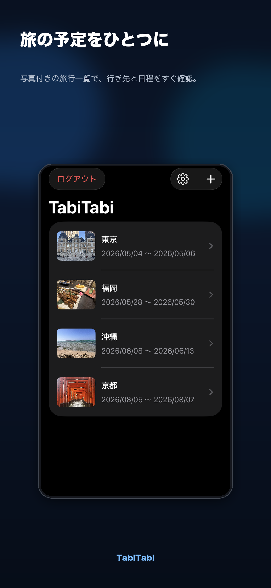
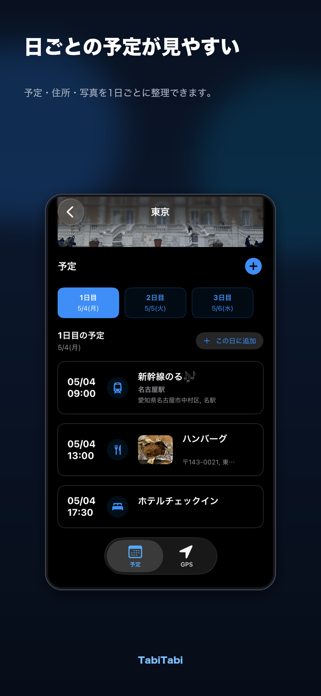
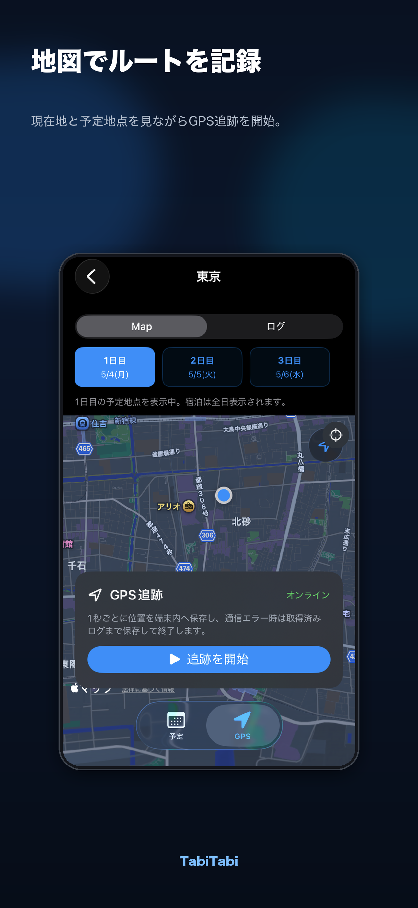
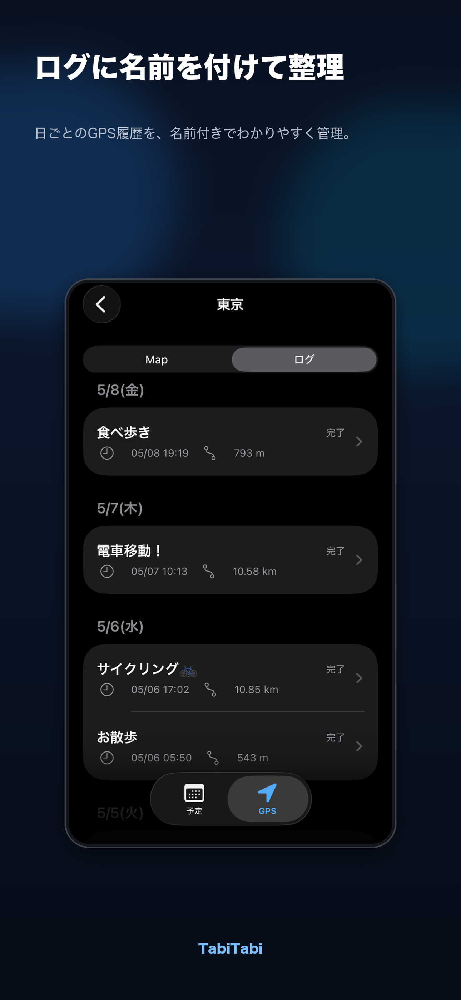
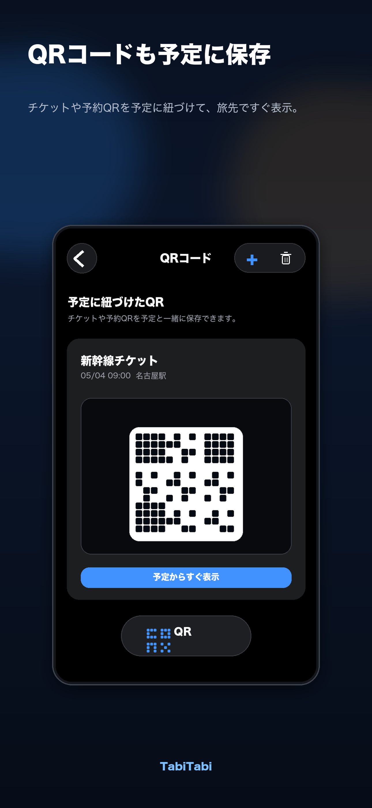

日ごとの予定管理
1日目、2日目のように旅程を分けて、予定・住所・写真を見やすく整理できます。
日程、予約QR、予定地、移動ルートを旅行ごとにまとめて管理できます。現地で必要な情報へすぐ戻れることを大切にしています。
1日目、2日目のように旅程を分けて、予定・住所・写真を見やすく整理できます。
チケットや予約QRを予定に紐づけて保存し、旅行先ですぐ表示できます。
移動ルートを記録し、日別のログとして地図上で振り返れます。
選択した日の予定地を地図に表示。宿泊場所は旅行中いつでも確認できます。
旅行や予定に写真を追加し、行き先を視覚的に見つけやすくできます。
ログイン画面と設定画面から表示言語を切り替えられます。
旅行一覧、日程別予定、GPSマップ、GPS履歴、QRコード管理まで、旅行中によく使う画面をすぐ開けます。





旅行前の準備から旅行後の振り返りまで、同じ旅行データの中で管理できます。
旅行名と日程を登録し、旅行ごとの管理スペースを作ります。
日付、場所、住所、写真、カテゴリーを登録します。
チケットや予約情報を予定に紐づけて保管します。
GPSログを残して、あとから旅のルートを確認できます。
お問い合わせ、データ削除、位置情報や写真の取り扱いについて公開ページで確認できます。